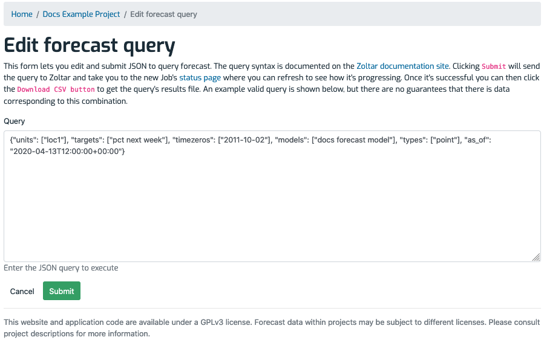

Managing forecasts¶
A forecast is a set of predictions for combinations of units and targets. See Data Model for detail on the structure of predictions. Following are the forecast operations you can do from within Zoltar.
Note: Operations on forecasts, like many Zoltar activities, can be done either through the zoltardata.com web interface or programmatically using the Zoltar libraries.
Note: As mentioned in Concepts, forecasts can have versions via their
issued_atfield. However, versioning is currently supported only via the API.
Upload a forecast¶
Here we show how to upload forecast data into Zoltar.
Note: As mentioned at Jobs, uploading a forecast is done in a separate worker process because it may take more than a handful of seconds to run. Thus the workflow is based on that (see Job workflow for details).
Forecasts are uploaded to a particular model for a particular time zero. To upload one:
- Go to the model detail page of the one you want to upload into.
- Make sure "Hide if no data" is unchecked.
- Find the time zero that the forecast is associated with.
- If the time zero already has a forecast then delete it (see Delete a forecast below). You can tell if a time zero has an uploaded forecast in two ways: the text in the "Data Source" column is a link instead of the words "(No data)" and the icon in the "Action" column is a red trash can and not a green upload icon.
- Click the "Browse..." button in the time zero's "Action" column.
- In the dialog that appears, select a Forecast data format JSON file
- Click the green upload button.
- If the file is OK then you will be taken to a job detail page that shows the status of your upload, with the message "Queued the forecast file _ for uploading.", where _ is your file's name.
- Once the upload is successful (you can refresh the job detail page to check) then you will see the newly-uploaded file listed next to the selected time zero on the model detail page.
- If there was a problem uploading then you will see the upload's status as FAILED. The Failure section will provide some information to help debug the problem.
Delete a forecast¶
Delete a forecast via these steps:
- Go to the model detail page where the forecast resides.
- Click the red trash can button in the "Action" column.
- Click "Delete" in the confirmation dialog that appears. Note that this cannot be undone!
Download a single forecast¶
To download a particular forecast:
- Go to the model detail page where the forecast resides.
- Click the link in the "Data Source" column to go to the forecast detail page.
- Click the "Download JSON" button and save the file in the JSON format documented at Forecast data format for details.
(Note that if you are only interested in a particular unit/target combination, you can use the "Query Forecast Data" form on that page - see here for details.)
Download multiple forecasts¶
Note: Downloading multiple forecasts is currently available only to users with Zoltar accounts.
Note: As mentioned at Jobs, downloading a forecast is done in a separate worker process because it may take more than a handful of seconds to run. Thus the workflow is based on that (see Job workflow for details).
Forecasts are downloaded by executing a forecast query by either a) Zoltar API using the Zoltar libraries, or b) via a simple web UI form (shown below). In both cases you need to follow these steps:
- Decide the data of interest (i.e.,
models,units,targets,timezeros, and predictiontypes). - Submit the query to get a Job ID.
- Poll the resulting Job until it succeeds (see Check a job's status).
- Download the job's data (see Download a job's data). The format is described at Forecast data format (CSV).
Download forecasts via the web UI¶
To download forecast data via the web UI:
- Go to the project detail page whose models contain the forecasts.
- Click the "Download" button to the right of "Forecasts" in the Features section at the page's top.
- On the "Edit Forecast Query" page that shows, enter your query and then click "Submit" (see the screenshot below).
- Poll the resulting Job until it succeeds (see Check a job's status).
- Download the job's data (see Download a job's data).
Here's an example of the Edit Forecast Query page:

Download the Zoltar database for local use [BETA]¶
Zoltar along with Zoltpy supports downloading the Zoltar database itself as an sqlite3 database file for local querying. (We call this a "bulk" download.) This beta feature was developed for programs that need to perform too many forecast queries to go through the server.
Note: This feature is an admin-level one that does not have a convenient web service interface. Please contact us if you'd like to use this feature.
There are three overall steps to use the feature and each step has a corresponding command line program. Following are the details.
1) [server] Dump/export a selected portion of the Zoltar database to zipped CSV files.
Run the program utils/bulk_data_dump.py to create a zipped archive of CSV files that can be loaded into an sqlite3 database file (step 2). This program takes three args:
- project_name: the name of an existing Project to dump data from
- query_file: a JSON file that specifies the initial filtering to do when dumping the database. This is an object that filters the dump. it is the same as the
queryarg toquery_forecasts_for_project()except that 'types' and 'as_of' are disallowed. i.e., what's allowed is: 'models', 'units', 'targets', and 'timezeros'. - output_dir: where to save the zip file that contains the dumped CSV files
Once you've run this program you can share the outputted zip file with bulk data users, who will run steps 2 and 3 on their local machines.
Note: The dump program limits the number of PredictionElement table rows to
MAX_NUM_PRED_ELES(currently two million). You may need to increase this depending on the initial filtering query.
2) [zoltpy] Load those files into a local sqlite3 database file.
The program cli/bulk_data_load.py loads the CSV files created in step #1 into a new sqlite database file. It takes these args:
- zip_file: the zip file as created by the dump program
- sqlite_file: sqlite file to save to. must not exist
3) [zoltpy] Run forecast queries against that file.
Finally, you can query the sqlite3 file using the cli/bulk_data_query.py command:
- sqlite_file: the sqlite database file as created by
bulk_data_load_app() - query_file: a JSON file that contains the query, as documented at forecast query format
- csv_file: where to save the CSV file to. NB: OVERWRITTEN if exists. The format is documented at Forecast data format (CSV).